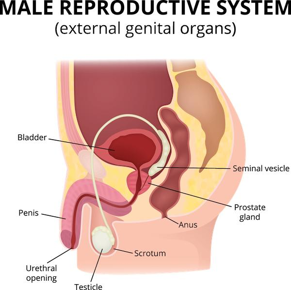
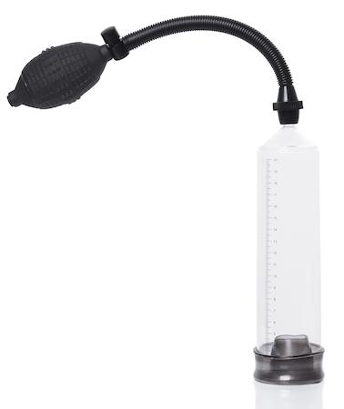

Erectile dysfunction, or ED, means having trouble getting or keeping an erection firm enough for sex. This is common and can happen at any age, but it is more common as people get older. ED can be caused by health problems, stress, or even some medicines.
Having ED does not mean something is “wrong” with you. Many people go through it. The good news is that there are many safe treatments that can help.
The following treatments work directly on the penis.

A vacuum pump is a device that helps draw blood into the penis using air pressure. It has 3 parts:
A tube that goes over the penis
A pump that pulls air out of the tube
A band, called a tension ring, that goes around the base of the penis to help keep the erection
You place the tube over your penis and use the pump to create suction.
This brings blood into the penis.
You slide the tension ring to the base of the penis to hold the erection.
Remove the ring after 30 minutes or sooner.
Bruising or redness
Numbness or a cold feeling
Trouble ejaculating while wearing the ring
Not recommended for people with certain blood conditions

Transurethral medicine is a small medicine pellet placed into the urethra. You use a thin applicator to place the pellet through the tip of the penis.
The medicine opens blood vessels to increase blood flow.
It usually works within 10 to 15 minutes.
Mild pain or burning
Bleeding or redness
Dizziness or low blood pressure in rare cases
May not work for all people
Should not be used more than twice a day
Self-injection therapy means using a tiny needle to inject medicine directly into the base or side of the penis. Do this only if trained by your care team.
The medicine helps blood flow into the penis.
It usually works in 5 to 20 minutes and lasts 30 to 60 minutes.
Pain at the injection site
Long-lasting erection of more than 4 hours, which needs medical help
Scar tissue, if used too often in the same spot
The tension ring, also called a constriction ring, is used with a vacuum pump or sometimes alone. It helps keep the erection by stopping blood from flowing back out of the penis.
The ring goes around the base of the penis after the erection starts.
It should not be left on longer than 30 minutes.
Discomfort or pain, if too tight
Skin irritation or bruising
Numbness or a cold feeling
Always remove the ring after 30 minutes to avoid injury.
What treatment might work best for my health and lifestyle?
How often can I use these aids safely?
What should I do if I get pain or side effects?
Will ED treatment affect my other health conditions?
Are there lifestyle changes that could help?
Thank you for trusting us with your care. We are here to support you and want you to feel your best. Contact us with any questions.
IF YOU HAVE A MEDICAL EMERGENCY, CALL 911 OR GO TO THE EMERGENCY ROOM.
The information presented is intended for general information and educational purposes. It is not intended to replace the advice of your health care provider. Contact your health care provider if you believe you have a health problem.
Last updated May 2025
© 2025 Mytonomy, Inc. All rights reserved.